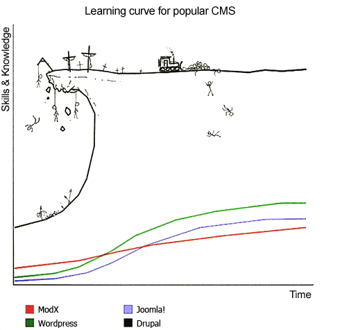

LAMP CMS Customizations
I have been writing customizations — extensions, modules, plugins, templates, and themes —
for a few of the most popular LAMP CMSes, keeping the code on
github.
I have been doing this off-and-on for many years, since the
PHP Nuke
days, in fact.1
Most recently I have written customizations that utilize device detection for each of the most popular LAMP CMSes,
Joomla,
WordPress,
and
Drupal.
This page contains an overview of that work.
Back
Top
AWD & RESS Using Device Detection
This work involves using the
idMyGadget
adapter API to provide the CMS with the ability to detect which device a visitor is using,
supporting implementation of
Adaptive Web Design,
or, more specifically,
Responsive Design with Server Side Components
(RESS).
Integrating
idMyGadget
with a CMS makes the results of the device detection available to all of the CMS's extensions —
all of its components, modules, plugins, templates, and themes.
This enables all of the extensions to call functions like
isPhone(),
isTablet()
and
isDesktop(), and
adjust the content served as appropriate.
Back
Top
Quick Links
Use one of these quick links to skip to a specific section.
Back
Top
Goals
My goals in pursuing this project were:
Back
Top
Joomla AWD and RESS Customizations
Because I was
already somewhat familiar with joomla,
before starting on this project, I decided to that version first.
-
jmws_idMyGadget_for_joomla
- The Joomla library in
jmws_idMyGadget_for_joomla
integrates the
idMyGadget
device detection adapter API with
Joomla.
The following repos contain Joomla templates that use idMyGadget device detection:
-
jmws_beez3_idMyGadget
- The template in
jmws_beez3_idMyGadget
combines the beez3 default joomla template and code using idMyGadget.
For this project, I made as few changes as possible to the template when
implementing the features listed below.
-
jmws_protostar_idMyGadget
- The template in
jmws_protostar_idMyGadget
combines the protostar default joomla template and code using idMyGadget.
For this project, I again made as few changes as possible to the template when
implementing the features listed below.
-
jmws_protostar_tomh_idMyGadget
- The template in
jmws_protostar_tomh_idMyGadget
combines the protostar default joomla template with code using idMyGadget.
In addition to the changes needed to implement the features listed below,
this template also contains some changes I felt like making while I was working on the project.
Each of these templates has the following options tabs in the CMS's administration panel allowing administrators to:
- The IdMyGadget Options Tab allows site admins to specify:
-
- Which device detection library to use
- Which header (logo) image is served — if any — on phones, tablets, and desktops
- Whether to use the Fluid Layout on phones, tablets, and/or desktops
- Whether to show the site name on phones, tablets, and/or desktops
- The site title — if any — and the html element to use for it on phones, tablets, and/or desktops
- The tag line — if any — and the html element to use for it on phones, tablets, and/or desktops
- The Hamburger Nav Options Tab allows site admins to specify:
-
- Whether to show the Left Side Hamburger Menu Icon on phones, tablets, and/or desktops
- Whether to show the Right Side Hamburger Menu Icon on phones, tablets, and/or desktops
- The Left Side Hamburger Menu Icon size and color
- The Right Side Hamburger Menu Icon size and color
- The line cap and line size of the Left Side Hamburger Menu Icon
- The line cap and line size of the Right Side Hamburger Menu Icon
- The Phone Nav Options Tab allows site admins to specify:
-
- Which jQuery Mobile Menu Theme to use
- Whether to show the Phone Nav Menu on phones, tablets, and/or desktops
Adding the Phone Nav Menu causes the template to include
jQuery Mobile,
which is what makes the Phone Nav Menu display mobile-friendly app-like menu options in the page header or footer or both.
The Phone Nav Menu does not look good on tablets and desktops, but
the option to use it on those clients is available so that you can judge for yourself.
The template currently active on
joomoowebsites.com
is
jmws_protostar_tomh_idMyGadget.
Back
Top
WordPress AWD and RESS Customizations
Because I had a little experience with
WordPress
before starting on this project, I did it second.
-
jmws_idMyGadget_for_wordpress
- The WordPress plugin in
jmws_idMyGadget_for_wordpress
integrates the
idMyGadget
device detection adapter API with
WordPress.
Enabling the IdMyGadget plugin adds the following options under Plugins -> IdMyGadget.
- The Plugins -> IdMyGadget Options allow site admins to specify:
-
- Which logo image is served — if any — on phones, tablets, and desktops
- Whether to show the site name, and the html element to use for it, on phones, tablets, and/or desktops
- The site title — if any — and the html element to use for it, on phones, tablets, and/or desktops
- The tag line — if any — and the html element to use for it, on phones, tablets, and/or desktops
The following repos contain WordPress themes that use idMyGadget device detection:
-
jmws_wp_idmygadget_vqsg_ot
- I got the theme in
jmws_wp_idmygadget_vqsg_ot
WordPress Visual Quickstart Guide.
It is a very simple theme so it was very easy to add device detction to it.
-
jmws_wp_idmygadget_twentythirteen
- The theme in
jmws_wp_idmygadget_twentythirteen
is the
twentythirteen default wordpress theme
with device detection provided by idMyGadget.
-
jmws_wp_idmygadget_twentyfifteen
- The theme in
jmws_wp_idmygadget_twentyfifteen
is the
twentyfifteen default wordpress theme
with device detection provided by idMyGadget.
Each of these themes has the following groups of options in the CMS's administration panel:
- The IdMyGadget Detector group of options allows site admins to set:
-
- Which device detection library to use
- The IdMyGadget Header/Footer Menus group of options allows site admins to specify:
-
- Which jQuery Mobile Menu Theme to use
- Whether to show the Phone Nav Menu on phones, tablets, and/or desktops
Enabling either the Header or Footer Menu causes the template to include
jQuery Mobile,
which is what makes the Phone Nav Menu display mobile-friendly app-like menu options in the page header or footer or both.
The Phone Nav Menu does not look good on tablets and desktops, but
the option to use it on those clients is available so that you can judge for yourself.
- The IdMyGadget Left Hamburger Menu Icon group of options allows site admins to specify:
-
- Whether to show the Left Side Hamburger Menu Icon on phones, tablets, and/or desktops
- The Left Side Hamburger Menu Icon size and color
- The line cap and line size of the Left Side Hamburger Menu Icon
- The IdMyGadget Right Hamburger Menu Icon group of options allows site admins to specify:
-
- Whether to show the Right Side Hamburger Menu Icon on phones, tablets, and/or desktops
- The Right Side Hamburger Menu Icon size and color
- The line cap and line size of the Right Side Hamburger Menu Icon
The theme currently active on
tomwhartung.com
is
jmws_wp_idmygadget_twentythirteen.
Back
Top
Drupal AWD and RESS Customizations
Because I had absolutely no experience with
Drupal
before starting on this project, I did it last.
- jmws_idMyGadget_for_drupal-d8
- The Drupal service in
jmws_idMyGadget_for_drupal-d8
integrate the
idMyGadget device detection adapter API
with
Drupal 8.
-
jmws_idMyGadget_for_drupal-d7
- The Drupal module in
jmws_idMyGadget_for_drupal-d7
integrates the
idMyGadget device detection adapter API
with
Drupal 7.
2
I got
idMyGadget
integrated with Drupal 7, but when I tried it learned that the version of
jQuery
used by Drupal 7 was incompatible with the version of
jQuery Mobile
I was using.
There are
ways to fix this,
but when it comes to
dog food
I like to eat
only my own.
By this time it was early November 2015, so I decided to wait until
Drupal 8 was released.
First Time for Everything
This was not just my first experience with Drupal, but also
my first experience with the fresh release of a new major version of a major CMS.
At the time, I was somewhat surprised at the lack of up-to-date documentation.
In retrospect, this is not surprising at all.
As it turned out, I found some very important information on
youtube.com
of all places.
This was not what I expected, but in hindsight it makes perfect sense:
the informative video was from
DrupalCon 2015 in Barcelona,
and done shortly after they finalized the changes that were going into D8.
Having found one, I wanted to watch all the videos; the
FOMO
here is strong.
Of course watching them all is out of the question, there are too many.
3
There's a first time for everything, and this turned out to be a huge learning experience.
Now I know where to go first for leading-edge information such as this!
Drupal Theme Repos
The following repos contain Drupal themes that use idMyGadget device detection:
-
jmws_drupal_idMyGadget_stark-d8
- The theme in
jmws_drupal_idMyGadget_stark-d8 ....
-
jmws_drupal_idMyGadget_bartik-d8
- The theme in
jmws_drupal_idMyGadget_bartik-d8 ....
The theme currently active on
tomhartung.com
is
jmws_drupal_idMyGadget_bartik-d8.
Back
Top
Why AWD, RESS, and LAMP CMSes?
Why did I do this?
- Really, just mainly out of curiosity.
- Noticed that very few people were doing this - integrating Device Detection with LAMP CMSes -
so it seemed like an opportunity to do something unique.
- A side goal: intuitively it seems to me that knowing about LAMP CMSes would be a
good start to getting possible freelance work.
- Another side goal: CMS selection for Groja/SeeOurMinds.com
- Ultimately though, just mainly out of curiosity.
Back
Top
Time Spent by CMS and Task
I have tried to simplify and summarize this work, but I assure you that all this took a long time!
The following pie charts show how I spent my time on this project.


Of course, now that I have done it, I could do it much more quickly.
The irony is I spent about the same amount of time on Drupal as I did on the other two CMSes.
Drupal is complex, and is well-known for having a
steep learning curve
4.
Top
Notes
- 1
Although I was able to re-use many of the core classes I wrote, much of that work is now obsolete.
- 2
Note that the version for Drupal 7
(jmws_idMyGadget_for_drupal-d7)
will probably require a third-party plugin to enable using a version of
jQuery
that is compatible with
jQuery Mobile.
- 3
Plus they tend to put me to sleep, even when I take notes. Bummer.
- 4

- 5
- 6
- 7
- 9